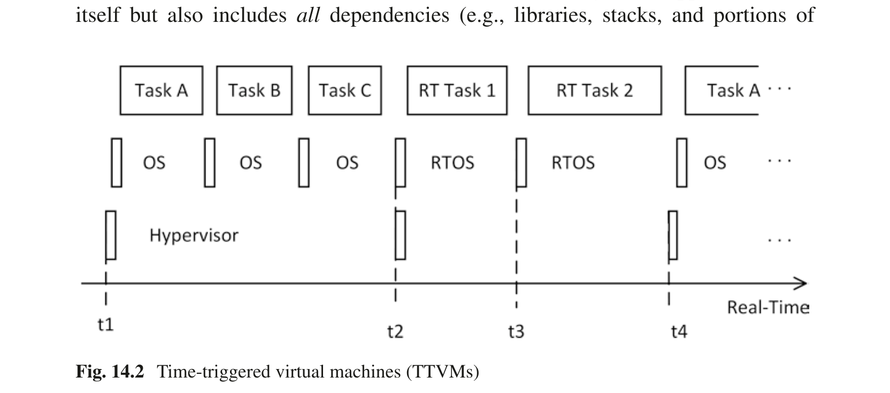
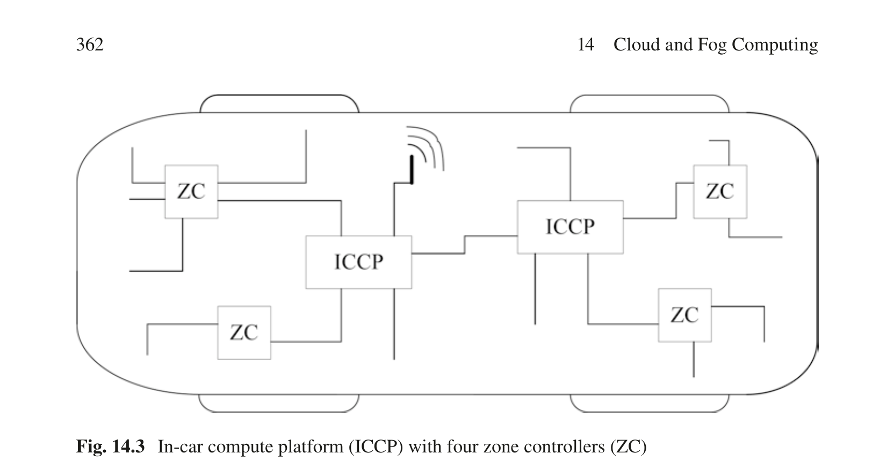
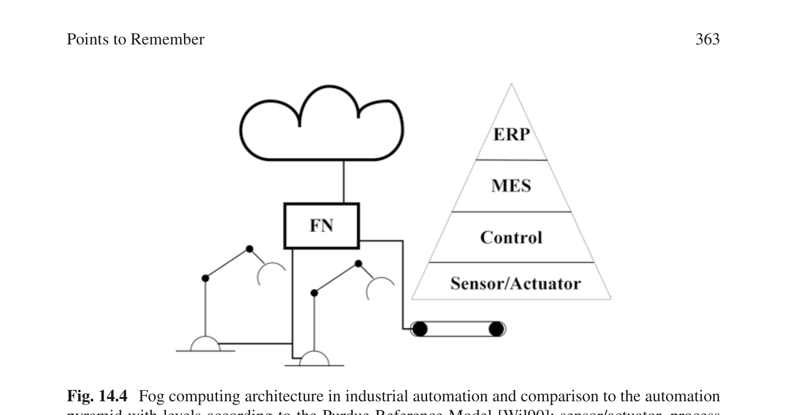

第14章 云计算与雾计算
Real-Time Systems — Hermann Kopetz & Wilfried Steiner 著 | AI 辅助翻译
本章概述
云计算起源于 21 世纪初数据中心过剩容量的商业化。大型数据中心运营商当时意识到，他们的资源利用率平均如此之低，以至于将计算时间和存储等资源出租给付费客户变得有利可图。结果，云计算范式在全球范围内迅速被采纳并取得了巨大成功。截至 2020 年底，约有 600 个超大规模数据中心在运行中提供云计算服务。云计算经常用于实现软实时系统，如视频流、电子商务或办公与协作应用。然而，本章更感兴趣的是探讨云计算如何作为一种设计原则融入构成硬实时系统的分布式嵌入式应用。
我们首先概述云世界和实时系统世界之间的显著差异。我们认为，云世界本身不适合硬实时系统，因为它无法提供及时性保证，并引入了雾计算（fog computing，也称边缘计算 edge computing）作为利用云优势的一种手段。雾计算是一种区分嵌入式层、雾层和云层的架构风格。与云不同，雾层靠近被控对象，由雾节点组成，其特征是提供资源池化、北向和南向连接性以及雾层和嵌入式层的配置能力。我们详细说明了雾计算的主要优点和风险，并继续讨论沿上述特征展开的关键雾和云技术。我们将虚拟化作为一种资源池化方法进行讨论，引入时间触发虚拟机（TTVM），并展望容器和无服务器计算。北向连接性将雾层连接到云，而南向连接性将雾层连接到嵌入式层。我们讨论北向和南向连接性之间的主要差异。我们还给出配置特征的示例。我们在本章结尾讨论了云计算和雾计算在硬实时系统中的用例，并说明了用于工业雾计算的 Nerve 软件平台如何满足雾节点的特征。
14.1 引言
在第 1 章中，我们将实时系统的主要功能需求定义为数据采集、直接数字控制和人机交互。过去，采集到的数据被传输到企业计算机进行存档和进一步分析。然而，随着许多企业计算功能向云迁移，以及通过互联网远程监控、诊断和更新实时系统的需求出现，将实时控制系统与云对接的需求便产生了。此外，一旦建立了云连接，就会出现新型的实时系统。
自动驾驶汽车是最复杂的实时系统之一。它们通常使用多种传感器和高清地图来安全地识别其位置并进行机动。与传统存储在汽车本地存储中的数字地图不同，作为云服务的数字地图使地图数据能够被视为实时图像，其时间精度由地图更新频率决定。该实时图像还可以包括天气、交通状况或事故信息。汽车可以集体地、即时地更新实时图像，例如使用 HERE 发布的传感器摄取接口规范 [HER15] 或 ETSI 集体感知服务分析技术报告 [ETS19]。
尽管将越来越多的实时系统功能卸载到云在经济上具有吸引力，但由于到云的连接和云中的计算通常不满足实时系统功能的时间要求，因此存在显著的限制。因此，云世界和实时系统世界之间存在一个边界，这个边界必须在空间上靠近被控对象。雾节点是这个边界的一种实现。它们将实时系统与云对接，并提供集中式计算能力。
随着云计算范式的出现，其在执行实时任务方面的用途已被研究。对于软实时任务，它很快就取得了成功。我们将相应的服务称为软实时服务，像视频点播或协作办公工具等服务如今已广泛使用。然而，在云中执行硬实时任务——我们称之为硬实时服务——已被证明是一个重大挑战，据作者所知，目前还没有任何云提供商具备在纯云计算环境中执行硬实时服务的能力。
上述挑战源于构成云的分布式计算机的复杂性及其与实时实体的连接性，这导致与云的通信和云中任务执行时间都存在高时间变化（即抖动）。因此，进出云的消息及其处理的行动延迟（action delay）质量低下，并且在实际中甚至可能无法可靠地计算。
测量互联网延迟的工具普遍可用。例如，ping 命令可以测量从发送端到云服务器再返回的往返延迟。从中欧 ping www.google.com 的结果显示平均往返延迟约为 20 ms，但偶尔延迟会显著超过 100 ms。另一个标准工具是 traceroute，它测量发送方和接收方之间的跳数。一个简短的实验表明，像 www.google.com 或 www.aws.com 这样的常见域名可以在十到二十跳之间可达（同样从中欧）。
硬实时服务需要最坏情况通信时间和最坏情况执行时间的可计算界限。使用当今的云技术，两者都不可能实现，这违反了云计算的核心假设——云的底层 HW/SW 系统将自动提供足够的性能（在本例中是指有保障的及时性）。然而，新兴技术如 5G 或用于通信的 IETF detnet 标准，以及在云中使用专门的实时硬件，可能会逐步解决这些开放问题。
由于云服务对消费者的响应时间也是软实时服务的重要属性，云提供商已经迅速意识到将其数据中心与用户地理协同定位可以显著减少通信延迟。随着我们继续将资源分布并进一步向消费者方向协同定位，一种新的架构风格——雾计算——出现了。
14.2 云的特征
云世界与实时系统世界有着根本的不同。云中的动态资源共享以牺牲实时保证为代价来提高可依赖性（dependability）和性能。我们在表 14.1 中总结了这两个世界之间的主要差异。
表 14.1 云世界与实时系统世界的比较
| 特征 | 云世界 | 实时系统世界 |
|---|---|---|
| 及时性 | 为平均情况设计 | 为最坏情况设计，有保证 |
| 可依赖性 | 可用性 | 可靠性与安全性 |
| 灵活性 | 消费者应感知无限资源，可快速扩展/缩减 | 在明确定义的界限内不频繁更新 |
| 物理结构 | 数据中心 | 嵌入式系统 |
| 可访问性 | 广泛且全球性 | 受限 |
让我们较详细地审视云计算的以下基本特征：
资源池化（Resource Pooling）。 简单来说，云是一个将资源池化并提供给许多消费者的数据中心。这些资源例如存储、处理、内存和网络带宽，云将确保每个消费者能够访问其份额的资源。然而，消费者通常不知道所提供资源的确切位置，也无法精确请求资源位置。这种特征——多个消费者共享一个资源池——称为资源池化。
广泛的网络访问（Broad Network Access）。 云中的资源必须通过标准化的通信方式轻松访问。此外，由于用户可能操作具有不同通信能力的各种设备（例如从智能手机到工作站），云还需要支持多种通信标准。
弹性计算（Elastic Compute）。 云计算固有地支持消费者资源需求的大规模且快速变化。一方面，按需自助服务特征意味着云计算使消费者能够以自动化方式增加其资源份额，无需云服务提供商的人工干预。另一方面，快速弹性特征进一步说明，云将快速处理消费者资源需求的此类变化。由于每个消费者的资源使用情况可能随时间大幅变化，云计算还必须具有计量服务特征，该特征本质上实现了计量方法，用于记录向消费者分配或由消费者消耗的资源数量。
云计算在各种用例中的显著经济效益以及潜在风险和挑战早已被分析，如 Armbrust 等人的讨论 [Arm10]。毫不奇怪，在有效利用上述云计算特征的用例中，经济效益最高。这些用例是消费者需求变化很大的用例，但也有资源需求不可预测的用例，例如一个提供新型 SaaS 的新 Web 创业公司。Armbrust 等人还给出了第三类用例——客户准备的高度可并行化的计算问题，可以通过在特定时期增加消费者资源供应来更快地解决。我们将在第 14.5.1 节中继续讨论实时系统背景下的云用例。
在风险方面，数据中心的某些典型风险仍然存在，例如单个资源故障或大规模损坏。然而，云提供商可以像传统数据中心运营商一样缓解这些风险，并且可能具有更优的缓解策略选择，因为他们通常运营多个可以互为备份的云站点。尽管如此，一些新的风险随着云计算固有地出现，或与传统数据中心相比显著增加。首先，由于多个消费者共享同一资源池，这些消费者现在彼此构成安全威胁（Armbrust 等人将此称为内部安全，internal-facing security）。事实上，大型云提供商在确保消费者之间无信息泄露方面投入巨大。例如，他们通过使用形式化方法来实现这一点。其次，由于多个消费者共享云基础设施的好处，他们也共同受到其故障的影响。例如，允许根据消费者需求快速自动扩展资源的协议和算法的复杂性增加了常见软件故障的风险。
NIST 在一份特别出版物 [Mel11] 中定义了云计算范式，该定义被云行业接受为最新技术水平。除了我们在本节讨论的基本特征外，它还规定了以下三种服务模式。
服务模式包括：
- 软件即服务（SaaS）
- 基础设施即服务（IaaS）
- 平台即服务（PaaS）
公众最常使用的服务模式是软件即服务（SaaS），消费者使用托管在云中的应用程序，例如 webmail 应用程序。对此类应用程序的唯一接口可能是 Web 浏览器。然而，云服务的消费者通常不是最终客户，而是需要不同服务模式的另一家企业。一种是基础设施即服务（IaaS），消费者（例如一家企业）可以控制在云中部署的应用程序、操作系统和存储。最后，平台即服务（PaaS）是介于 SaaS 和 IaaS 之间的另一种服务模式，消费者在其中开发和部署其应用程序，但受限于云提供的平台能力。
在上述数字地图示例中，最终客户可能将地图服务作为 SaaS 使用，而数字地图提供商可能不运营自己的基础设施，而是作为云提供商 IaaS 的消费者。
服务等级协议（Service-Level Agreement） 云计算提供商和消费者签订一份法律合同，称为服务等级协议（SLA），该协议定义了提供商交付的云服务以及消费者因此承担的成本。一些云计算提供商在其 SLA 中指示（在云中执行的服务）平均响应时间。然而，据作者所知，SLA 不保证最坏情况响应时间。
14.3 雾计算的出现
与云计算不同，雾计算没有一个广泛接受的定义。尽管 NIST 定义了雾计算概念模型 [Ior18]，但其采纳程度远低于 NIST 云计算定义。因此，在本章中，我们在雾计算作为分布式嵌入式系统设计原则的用途下定义它，并给出我们对它如何与类似概念（如边缘计算）相关的解释。
14.3.1 用于分布式嵌入式系统的雾计算
雾计算连接了云架构风格和嵌入式架构风格（见第 2.2.4 节），并引入了新的设计原则、规则和约定。因此，用于分布式嵌入式系统的雾计算本身就是一种架构风格，在这种风格中，控制物理过程的分布式计算机由嵌入式节点、至少一个雾节点和云服务组成。我们将一个或多个雾节点称为雾层，它具有以下三个特征：
（i）资源池化：雾层被配置为执行不同、潜在独立应用的实时服务。如果雾节点允许执行硬实时服务，则它配备足够的计算资源。
（ii）连接性：
（a）雾层通过北向接口连接到云。
（b）雾层通过南向接口连接到嵌入式节点，该接口通过实时网络与嵌入式节点通信，也可直接连接到传感器、执行器或两者。
（c）雾层实现了一个网关组件（见第 4.5 节），连接云和嵌入式的架构风格。
（iii）配置：
（a）雾层可以配置至少一些通过其南向接口可访问的通信和计算资源。
（b）雾层本身可以通过其北向接口进行配置。
我们将云称为云层，将嵌入式节点称为嵌入式层。图 14.1 描绘了雾计算架构中的三个层。
图 14.1 雾计算架构示例
自动化钻孔机——实现自动化钻孔机的雾计算架构可以如下实现。被控对象是一台自动化钻孔机，由一个摄像头、一个钻头定位系统和钻头本身组成。该机器自动供应工件，分布式计算机的任务是确定目标位置、钻孔尺寸和深度并执行实际钻孔。摄像头捕获工件的外观（钻孔前、钻孔中和钻孔后），然后通过实时网络将此图像发送到雾节点，雾节点生成钻头位置、钻头速度和钻头力的具体设定点。雾节点将这些设定点发送到嵌入式节点，嵌入式节点将其应用于定位系统和钻头。此外，雾节点将钻孔前后的工件图片发送到云端进行质量控制。
如果多个雾节点构成雾层，它们可以通过展示资源池化特征作为一个集合运行，类似于云计算。
自动化钻孔工厂车间——一个工厂车间可能部署了一百台钻孔机，由十个雾节点服务。如果其中一个雾节点发生故障，剩余的无故障雾节点将自动服务受影响的钻孔机。雾节点为此用例进行了充分配置。
雾节点可以是固定的或移动的。例如，雾节点可以位于工业自动化环境中，在工厂车间控制单个生产单元或工业机器人。雾节点也可以是移动的，例如集成在汽车内部。
14.3.2 雾计算的收益与风险
多年以来众所周知，通过采用抽象和分而治之原则的架构可以简化大型复杂实时系统的管理 [Kah79]。特别是，与传统的纯嵌入式架构相比，雾架构具有以下收益：
（i）分区（Partitioning）。 现代实时系统变得越来越复杂，我们必须使用简化策略来保持其可理解性。将系统划分为定义良好的子系统是一种简化策略（见第 2.1.4 节）。不同子系统通常具有不同的计算特征，因此雾计算架构可以通过将子系统适当地映射到合适的云层、雾层或嵌入式层来优化整体实时系统。此外，雾计算的分层结构也可以指导分区过程，并提供基本机制来控制子系统接口，在此之上可以构建更丰富的控制机制。
（ii）系统之系统（System-of-Systems）。 雾层还可以抽象嵌入式层的细节。一方面，抽象是另一种复杂性简化策略。另一方面，抽象使雾计算能够作为系统之系统（system-of-systems）形成的演进架构（见第 4.7.3 节）。
协作的自动驾驶汽车是组成系统。它们将由不同的汽车制造商生产，并可以非协调地演化。它们可以通过本地雾节点作为系统之系统互操作，根据需要调整各自的北向接口和网关组件。
（iii）嵌入式层卸载（Embedded-layer off-loading）： 雾层允许通过直接连接到传感器/执行器来节省整个嵌入式节点。那些保留在系统中的嵌入式节点可以实现降低的计算能力。尽管必须考虑雾层的额外成本并与嵌入式层节省的成本进行对比，但这种对比应涉及系统整个生命周期内的总成本。雾层提高了嵌入式层的可靠性（因为节点更少或更简单），且雾层的维护可能比嵌入式层更具成本效益（因为雾层更容易访问）。
（iv）优化的多核利用和资源过度配置（resource overprovision）： 增加每个芯片的处理器核心数量是当今硅性能增长的主要因素。因此，多核 SoC 也已广泛用于嵌入式系统市场。然而，仅执行单个应用程序的个体嵌入式节点不一定能利用这种硅性能的增长，因为应用程序具有非常专门化且通常非常狭窄的用途。雾节点能够有效利用多核 SoC，整合来自不同嵌入式节点的多个应用程序。此外，雾节点可以实现备用资源，为实时系统未来服务升级做好准备（资源过度配置）。
（v）简化的供电和冷却基础设施： 许多现代嵌入式系统在总体能耗方面有很高的需求，导致复杂的能源和冷却基础设施。随着雾计算架构减少了单个节点的数量，这些基础设施可以得到简化。在某些用例中，雾节点还可以远程放置，这降低了冷却和供电的难度。然而，如果雾节点超过一定复杂度，雾节点的冷却和供电子系统可能会成为挑战，分布式（雾）解决方案可能更为可取。
（vi）集中式数据采集和信息处理： 雾节点还可以充当集中实体，从嵌入式层收集数据。这些数据随后可以以多种方式处理，例如进行浓缩和压缩以上传到云层，用作入侵和异常检测的基础，进行应用级处理以为嵌入式层生成新信息，实施简化的冗余管理，以及为嵌入式层中的副本提供数据一致性服务。
（vii）集中式配置和维护： 现代实时网络如 IEEE 802.1 时间敏感网络（TSN）具有许多配置和重配置能力。雾层非常适合作为嵌入式层中此类网络的中央网络配置实例运行。类似地，雾层可以作为集中实例运行，从云层接收嵌入式层的新软件更新并管理更新过程。
（viii）安全架构手段： 雾层可以作为抵御安全威胁的多条防线之一运行。例如，雾节点可以实现入侵检测算法或防火墙。
将功能从嵌入式层集中到雾层也可能带来新的可依赖性问题和安全风险。
尽管系统设计实现了雾计算架构，它仍然必须满足应用特定的可依赖性目标。这些目标可以通过雾节点的足够质量、雾节点的复制、在雾层和嵌入式层中设计组合可依赖性措施，或这些方式的组合来实现。此外，应避免典型的系统设计陷阱：单点故障、故障和错误传播（特别是在云、雾和嵌入式层边界之间）以及共模故障。在单个雾节点内实现多个故障隔离单元在某些系统设计中可能是合理的。然而，这样的设计必须以极大的谨慎进行分析，并且必须证明上述陷阱已被避免或至少被充分缓解。
在雾计算架构中，雾层是通向云的唯一接口。尽管如上所述这具有安全优势，但它也将成为安全攻击的主要目标。因此，雾层本身需要按照高安全要求进行设计。根据具体的用例，还建议实施直至嵌入式层的端到端安全措施，例如通过使用签名和安全启动。
14.3.3 通用雾计算及与边缘计算的比较
Shi 等人 [Shi16] 将"边缘"定义为"沿数据源和云数据中心之间路径上的任何计算和网络资源"，并认为"边缘计算与雾计算是可互换的"。尽管 NIST 指出了雾和边缘之间的差异，我们同意 Shi 等人的观点。边缘计算和雾计算的技术实现似乎是相同的。然而，技术实现可以从不同的角度来看待。一方面，云和互联网服务提供商将其基础设施的核心（core）和边缘（edge）区分为计算位置。因此，他们倾向于使用术语边缘计算，如今云提供商也提供边缘计算即服务。另一方面，从架构风格的角度，我们更倾向于雾计算，及其定义的云、雾和嵌入式层。在与云计算相关的语境中，这也是一个更好的比喻，尤其因为云没有边缘。
14.4 选定的云和雾技术
虽然雾计算范式作为一种架构风格直接源于云计算，但使雾计算成为可能的技术，特别是构建复杂实时系统所需的技术，是与云计算技术并行演进的。在本节中，我们讨论雾计算的使能技术。讨论按照我们先前引入的三个雾计算特征来组织：资源池化、连接性和配置。我们还在本节中讨论雾计算中的系统设计自动化，并强调适当配置工具的重要性。
14.4.1 资源池化
用于实时系统的雾节点必须限制其托管的不同应用程序之间的干扰，并向其南向用户提供可预测的界限。只有这样，雾节点的实时服务才能符合其规范。云计算中用于资源池化的标准软件技术是虚拟化、容器化和无服务器计算。尽管这些技术限制了干扰，但其实际实现（i）缺乏安全相关和安全关键系统通常所需的严格审查，并且（ii）通常只考虑值域的干扰限制，而不关心硬实时系统绝对必需的时间域干扰。
最强大的干扰限制形式是基于硬件的：雾节点实现多个芯片。结果，在不同芯片上执行的应用程序之间的干扰受到限制，连接这些芯片的通信系统可以施加控制。
zFAS——zFAS 是一个用于汽车驾驶辅助系统的中央域控制器。它由一块实现多个 CPU 和一个 FPGA 的单板组成。一个时间触发以太网交换机连接它们。
雾节点甚至可以实现通过背板连接的多块板卡。这种雾节点通常使用 Ethernet、PCIe 或两者作为背板通信。除了干扰限制外，需要多芯片雾节点实现的其他问题还包括对性能的纯粹需求、缺乏经过认证的半导体，以及作为硬件加速器的专用芯片。然而，半导体行业的趋势表明，越来越多地集成到单个片上系统（SoC）解决方案中，旨在缓解上述问题。例如，今天已有可用的半导体实现了用于关键应用的安全岛（safety island）。芯片的这个安全岛部分按照行业特定的安全标准开发，并与同一硅片上的其他非安全部分集成。
软件解决方案也可以限制干扰。例如，在传统嵌入式系统中，实时操作系统的任务是调度实时任务。因此，只要操作系统满足任务的截止时间，任务之间的时间干扰是可接受的。同样，其他操作系统服务将确保值域的干扰限制（例如内存管理、I/O）。
虚拟化（Virtualization） 随着半导体性能的不断提高，特别是多核 SoC 的发展，虚拟化在技术上对硬实时系统变得可行，从而实现了前一节讨论的雾计算收益。虚拟化是一种成熟的硬件抽象技术，由 Goldberg [Gol73] 引入，可虚拟化计算机架构的形式化需求由 Popek 和 Goldberg [Pop74] 制定。虚拟化利用虚拟机监视器（VMM）来管理和控制虚拟机（VM）。今天，VMM 通常被称为 hypervisor（虚拟机管理程序），它们有两种类型。类型 1 hypervisor 是一个直接在硬件计算资源（即处理器）之上运行的软件层；它也称为在裸机（bare metal）上运行。相比之下，类型 2 hypervisor 在操作系统之上运行。因此，在类型 2 hypervisor 的情况下，操作系统位于 hypervisor 和裸机之间，称为宿主操作系统。通常，操作系统也安装在 VM 内部——这些操作系统称为客户操作系统。
今天，现代处理器不仅支持计算虚拟化，还支持 I/O 和图形虚拟化。随着每个处理器中计算核心数量的增长，虚拟化已成为实现细粒度资源池化的主要技术。例如，VM 可以配置为在固定的一组处理器核心上执行，这称为固定（pinning）。核心也可以配置为在 VM 之间共享，包括来自不同消费者的 VM。
一个特定的服务器级 SoC 可能实现 64 个核心。通过使用 Xen 类型 1 hypervisor，可以通过将适当的核心分配给消费者 VM 来支持许多单独的云消费者。在一个简单的场景中，63 个云消费者各获得一个独占分配的核心，留下一个核心供 Xen 管理虚拟机。
在云中，每个消费者的 VM 数量可以根据消费者需求动态扩展，VM 可以配置为从一台机器迁移到另一台机器，例如在故障情况下。雾节点可以使用用于硬实时系统的 hypervisor，这些 hypervisor 已经开发了相当长的时间。早期的开源 hypervisor 包括 RT-Xen [Xi11]。ACRN [Li19] 是一个较新的例子。还存在越来越多的商业解决方案。
Nerve 平台——Nerve 是一个用于工业自动化的雾计算平台。它实现了 ACRN 2.0 hypervisor，允许执行工业实时任务。
它们必须解决的一个基本问题是多级调度问题。
虚拟化系统中的多级调度 假设一个系统由一个多核 SoC 组成，该 SoC 由类型 1 hypervisor 虚拟化，实例化多个虚拟机，并让至少一个虚拟机实现实时操作系统。虚拟化系统中的多级调度是协调 hypervisor 的调度决策与客户操作系统的调度决策的问题，以使在虚拟机中执行的实时任务确实满足其截止时间。
在最简单的解决方案中，多级调度退化为经典的实时调度和适当的 hypervisor 配置：VM 固定（VM-pinning）将计算核心独占分配给 VM。因此，每当客户操作系统调度实时任务执行时，它不会被 hypervisor 在该核心上调度另一个 VM 所延迟。然而，VM 固定可能成本较高。
或者，一个成本效益高的解决方案是时间触发虚拟机（TTVM），其中 VM 激活和实时任务执行的调度在设计时联合生成。

图 14.2 描绘了一个简单的例子，两个 TTVM 在单个计算核心上执行。一个 TTVM 执行非实时任务（任务 A–C），而第二个 TTVM 执行实时任务（RT 任务 1 和 RT 任务 2）。在这个例子中，在时间点 t1–t4 的活动在系统设计时定义，并以 t4 的活动重复 t1 的活动循环重复。时间点 t1、t2 和 t4 是 hypervisor 配置的一部分，指示了相应 TTVM 的启动时间。时间点 t2 和 t3 是 RTOS 配置的一部分，指示 RTOS 何时启动实时任务。
图 14.2 时间触发虚拟机（TTVM）
时间触发虚拟机还需要同步的全局时间。Ruh 等人 [Ruh21] 研究了使用 ACRN 作为 hypervisor 和 IEEE 802.1AS 作为时钟同步协议的虚拟化分布式系统中的时钟同步。他们表明，虚拟环境中的时钟同步质量可以接近非虚拟化系统。实验实现了远低于一微秒的时钟同步精度。
容器（Containers） 通过 hypervisor 的虚拟化在不同 VM 之间提供了强隔离，但它有一定的成本：每个 VM 都需要实现一个客户操作系统。因此，在过去几年中开发了更轻量级的虚拟化形式。其中一种技术称为基于容器的虚拟化 [Sol07]，其最突出的实现是 LXC（https://linuxcontainers.org/）和 Docker [Ber14]。与 VM 不同，容器不使用 hypervisor 进行分离，而是直接使用操作系统的内核机制（例如在 Linux 中：命名空间 namespaces、cgroups 和 capabilities）。为此，容器由容器引擎（container engine）管理和控制，该引擎通过对内核函数的适当调用来设置容器的执行。因此，容器是一种 OS 级虚拟化形式。
容器解决了软件开发中非常实际的问题：在容器内执行的软件镜像不仅由应用程序代码本身组成，还包括所有依赖项（例如库、栈和部分操作系统用户空间）。因此，在容器内执行的镜像是自包含的。由于镜像是自包含的，它们也很容易扩展。每个实现兼容容器的容器引擎的物理服务器都知道如何设置所述容器的执行。
容器编排（container orchestration，例如 Kubernetes）管理和控制容器的部署、通信和扩展。然而，这种容器编排只涉及容器本身，而不涉及容器内部执行的服务。容器编排将例如将容器分配到适当的计算资源，并设置虚拟网络基础设施以实现容器之间的通信。它还可以监控容器执行并在故障情况下重启容器。在容器成功设置后，容器内执行的服务将自己协调，而不依赖于容器编排。
用于实时系统的容器目前正在获得越来越多的研究关注 [Cin18]。类似于 TTVM，我们也可以设计时间触发容器（TTC），它们在同步全局时间的预配置时间点执行，其中容器编排可以包括这些时刻的计算。RTOS 内核和容器引擎需要确保 TTC 的及时执行。然而，由于容器之间的隔离是由容器引擎和底层操作系统内核建立的，这些部分的任何故障都可能对系统运行产生严重影响。例如，内核中的软件故障可能导致所有容器失败。
无服务器计算（Serverless Computation） 最新的计算资源抽象技术是无服务器计算，由亚马逊通过 AWS Lambda 函数引入 [Ama21]。术语"无服务器"需要从消费者的角度来理解：消费者可以直接在云中部署代码，而无需管理和控制服务器（即 VM 或容器）来将所述代码作为服务执行。Baldini 等人 [Bal17] 概述了无服务器平台的关键特征。在其他用例中，无服务器平台通常执行由单一主函数组成的代码，这些函数可以用多种受支持的编程语言（如 Java 或 Python）编写。此外，云将按需启动无服务器函数，并根据实际消费者需求扩展其实例数量。因此，"突发性、计算密集型工作负载"从无服务器计算中获益匪浅 [Bal17]。
据作者所知，无服务器计算尚未用于硬实时系统。然而，尽管在撰写本文时这还属于推测，但无服务器实时计算在未来也有可能成为现实，因为它使应用程序开发人员完全摆脱了平台顾虑。应用程序设计者可以专注于解决其领域特定问题，而平台负责以（微）服务形式将应用程序集成到系统中。在实时系统世界中的这种集成将远超云世界，因为它必须考虑在时间域中描述应用程序的特征（例如通过计算应用程序的 WCET）以及其可依赖性和安全属性。
14.4.2 连接性
我们区分连接雾层到云层的北向通信系统和连接雾层到嵌入式层的南向通信系统。这两种通信系统有显著差异，特别是在其实时属性方面。北向通信必须与云计算的广泛网络接入特征相配合，而南向通信则遵循实时网络的要求。
雾节点的北向通信系统的较低层通常实现 Ethernet、Wi-Fi 或 5G 等技术。在较高层，将实现标准互联网协议栈。例如，Dizdarevic 等人 [Diz19] 最近关于雾和云计算通信系统的调查报告指出，REST HTTP 经常被用作业通信的北向应用级协议。MQTT 是另一个知名协议。
北向通信系统的重要属性包括例如（并非所有要求都必须满足，它们将取决于实际的雾计算用例）：
（i）无损数据传输： 由于云计算的许多用例涉及数据收集和分析，北向数据不得丢失，在消息丢失的情况下必须重传。
（ii）容忍通信脆弱性： 北向通信系统可能是脆弱的，无论是在移动雾节点部署还是在固定设置中。移动雾节点（例如部署在卡车中）通过无线方式在到云的北向接口上通信，这种无线链路可能因为隧道或其他环境条件而中断。另一方面，固定雾节点可能部署在互联网基础设施欠发达的地理区域。因此，北向接口不能依赖始终在线的互联网连接。
（iii）偶发性大块数据传输： 可能需要进行大块数据传输，包括从雾到云的数据（例如地图或视频数据的大块上传），以及反向的数据（例如软件更新）。
南向通信将实现实时网络，如本书前面（第 7 章）已讨论的那样。因此，像 CAN 或实时 Ethernet 变体（包括 IEEE 802.1 时间敏感网络 TSN）等技术被用于较低网络层。南向的较高层协议通常是专有的。然而，各行业正在持续进行标准化努力，例如机器人技术中的 ROS（Robot Operating System）、汽车领域中的 SOME/IP、工业自动化中的 OPC UA 或跨行业的 DDS（Data-Distribution Service）。此外，还形成了特殊兴趣小组来标准化高层与低层协议的交互，例如 OPC UA over TSN 或 DDS over TSN。
数据分发服务（DDS）包括一个发布-订阅消息代理系统。一方面，DDS 节点将其输出（称为主题 topics）作为消息发布。另一方面，DDS 节点可以订阅主题。DDS 建立发布者和订阅者之间的信息交换。DDS 由 OMG 标准化 [OMG15]。
一些行业，特别是汽车行业，区分基于信号（signal-based）的通信和面向服务（service-oriented）的通信。基于信号通常意味着直接在较低网络层上进行基于消息的通信，其中通信配置也经常是硬编码的。一个信号可能例如与具有硬编码发送方和接收方的 Ethernet 消息负荷中的某个字段相关。面向服务也是基于消息的，但意味着包含较低和较高网络层的更丰富的通信系统。在较高层，面向服务通信可能例如包括发布-订阅消息代理系统或服务发现协议。面向服务通信增加了系统的灵活性，但也增加了其复杂性。
用于容错的服务发现——一个安全关键系统可以设计为依赖服务发现过程作为故障切换例程的一部分。例如，如果主系统发生故障，服务发现可以识别备用服务。在这样的设置中，服务发现的故障可能导致灾难性事件。
如示例所示，在硬实时系统中，特别是安全关键系统中使用面向服务通信必须逐案仔细审查。例如，一种非关键地使用面向服务通信的方式是在系统的开发阶段，当软件更新频繁时。然而，一旦系统进入生产阶段，面向服务通信的动态部分将被静态配置所替代。
14.4.3 配置
雾节点在雾计算架构中的位置使其能够在嵌入式层上执行配置权限，并可由云层重新配置。
雾节点可以重新配置连接嵌入式层的实时网络（南向接口）。例如，IEEE 802.1 TSN 定义了中央网络配置（CNC）和中央用户配置（CUC）的服务。这两种服务都针对网络配置和重配置以适应不断变化的应用程序需求。这些服务可以在雾节点中实现。
此外，雾节点还可以充当包括嵌入式层在内的系统级软件更新过程的代理：新的软件镜像被下载到雾节点，并从那里分发到相应的嵌入式节点。
空中下载（OTA）更新 I——一个新的汽车摄像头驱动软件版本可用。该摄像头位于实现雾计算架构的自动驾驶汽车中。新软件版本首先加载到汽车内的雾节点中，然后进一步分发到控制摄像头的嵌入式节点。
雾节点本身可以通过其北向接口进行更新。
OTA 更新 II——一个新的传感器融合算法软件版本可用。该新软件版本通过北向接口加载到雾节点，雾节点将旧版本替换为新版本并在本地执行。
14.4.4 系统设计自动化
雾计算允许实现相当复杂的实时系统，例如自动驾驶汽车或自主工厂（工业 4.0）。然而，这些实时系统包含许多不同的技术，如我们在本节中讨论的技术，而这些技术中的大多数必须被适当地配置。不同技术的配置之间也存在许多依赖关系，例如上述的多级调度。其他依赖关系源于构建计算链的需要——一组必须在给定截止时间内在给定时间顺序中执行的任务，可能位于不同的计算资源中，甚至可能位于雾计算架构的不同层中。
MotionWise——MotionWise 是一个用于高级驾驶辅助功能和自动驾驶的汽车软件平台。MotionWise Creator 是一个用于系统设计自动化的工具。例如，它允许指定实时任务的属性（如 WCET、任务依赖关系、内存占用），MotionWise Creator 生成任务和通信调度。
系统设计自动化区分较低级配置和较高级配置，其中人工产生较高级配置，工具自动生成较低级配置。然而，随着技术进步和人类专家知识编码化，较高级和较低级配置之间的边界逐渐上升。因此，越来越多的配置任务变得自动化。
在当前 MotionWise 版本中，人工将功能分配到计算资源（较高级配置）。在即将发布的版本中，MotionWise 也将自动化此功能分配（较低级配置）。
雾计算中的系统设计自动化具有巨大的增长潜力。例如，未来它可能以以下为目标：（i）自动将功能分配到不同的雾计算架构层（嵌入式、雾、云）；（ii）自动化和支持为给定用例选择匹配技术；以及（iii）指导雾节点的选择和放置。
14.5 示例用例
云和雾计算为分布式嵌入式应用提供了许多用例。我们在本章的最后一节中讨论其中一些。
14.5.1 云计算赋能的用例
本节讨论嵌入式层与云层通信的架构用例，无论是直接通信还是通过雾层间接通信。雾层是可选的。
分布式数据采集与大数据处理
云计算的数据中心特征使其能够作为集中式数据存储和数据处理设施运行。当不仅单个系统向云馈送数据，而是更大的系统集合（例如汽车车队或工厂车间或多个工厂车间的工业机器人）这样做以实现更高的共同目标时，这是特别有吸引力的。
一支无人机机队配备单独的摄像头，用于在地震后绘制区域地图以辅助救援任务。无人机单独的摄像头馈送到云中，云生成综合地图。云服务可以基于综合地图和来自无人机摄像头的持续软实时馈送来指导救援任务。
在自动驾驶汽车的开发中，一个重要的验证手段是道路测试。一支自动驾驶汽车车队在道路上行驶时向云提供测试数据。这些测试数据的一部分是边缘案例检测（edge case detections），即汽车未正确识别或未按预期处理的情况。这些边缘案例检测被收集在云中，可以用于生成自动驾驶汽车的软件更新，包括对象识别过程中使用的神经网络的更新。
预测性维护——一个工业机器人工厂车间向云提供诊断数据。云可以在此诊断数据上使用模式识别方法来识别更换工业机器人组件的需求。此外，它可以从过去的事件中学习，并识别可能导致类似问题的模式。
如前面的示例所示，云中的数据采集和处理用例如多种多样。确实，大数据分析（例如参见 Sagrigoglu 等人 [Sag13]）已经在广告业等成熟行业中造成了颠覆，并且在传统实时控制行业（如工业 4.0）中具有类似的颠覆潜力。
数字孪生（Digital Twin）
NASA 分类法将数字孪生定义为基于模型的系统工程（MBSE）的一种手段。确实，NASA 最初在 Shafto 等人 [Sha10] 中引入了数字孪生概念来描述 NASA 数字孪生："数字孪生是车辆或系统的集成的多物理场、多尺度、概率仿真 [...]"，以及"数字孪生集成来自车辆板载集成车辆健康管理（IVHM）系统的传感器数据 [...]"。
在更一般的解释中，数字孪生概念有两个核心特征：
（i）数字孪生是物理系统的有用仿真模型。
（ii）物理对象和实现数字孪生的模型之间存在某种在线同步。
云计算是数字孪生的理想用例，因为仿真模型可能变得计算量相当大，而云计算的广泛网络访问特征可以实现与物理系统的同步。
工业机器人监控——工业机器人响应控制命令的运动在云中进行仿真。此仿真与物理孪生在相同控制命令下的实际运动进行比较。这种对物理孪生的持续监控和与数字孪生的比较可以检测故障和退化。
数字孪生概念已在不同领域被采纳，例如在机电一体化领域 [Bos16]，并且通常被视为工业 4.0 中的重要元素。
嵌入式软件工程的云支持
为嵌入式系统开发软件的传统方式是在开发计算机（笔记本电脑或工作站）上设计和编码，交叉编译，并直接在接近生产系统的目标硬件系统上进行测试。这种目标硬件通常直接放在软件开发人员的桌子上。这种设置给予了软件开发人员最大的灵活性，但有严重的缺点。
首先，可用目标硬件系统的数量可能成为瓶颈。特别是在使用尖端芯片组时，开发板稀缺是很常见的。另一方面，此类硬件可能非常昂贵，使得购置大量设备的经济理由难以成立。第二个主要缺点是缺乏固有的协作开发过程。
云计算技术可以在很大程度上缓解这些问题。云数据中心可以配备专门的目标硬件，以资源池化方式在不同开发人员之间共享。或者，更适应云计算的方式是，目标硬件由在标准云硬件上执行的软件层模拟，或至少在比具体目标硬件更通用的硬件上模拟。事实上，这种硬件模拟今天已做到芯片级别——甚至可以在芯片生产之前为该目标芯片开发软件。云计算也固有地支持团队协作。可以使用标准工作流编排技术，例如建立协作开发工作流。
尽管嵌入式软件开发的很大部分可以通过云计算技术来解决，但至少对于关键嵌入式系统，始终需要在生产硬件上进行最终验证和确认，以满足系统获得监管批准的要求。
14.5.2 雾计算赋能的用例
本节讨论具有必选雾层的架构中的用例。
汽车领域架构和车载计算平台（ICCP）
现代汽车是复杂的分布式计算机：大量电子控制单元（ECU）通过车内（实时）网络连接。ECU 和网络统称为 E/E 架构（电气/电子架构）。这种 E/E 架构在持续演进，是创新的主要来源。汽车执行的应用程序相当多样化，汽车制造商通常将其分组为领域（domain），如信息娱乐和数字座舱（infotainment and digital cockpit）、车身（body）、能源（energy）、高级驾驶辅助系统（ADAS）和自动驾驶（AD）、底盘（chassis）、动力总成（powertrain）和网关/连接性（gateway/connectivity）。过去，新应用程序作为硬件/软件捆绑包被引入汽车，即通过新的 ECU，并且通常随着新车型或重大车型改款的推出。这导致了相当高的 ECU 数量和复杂的车内网络：顶级车型的 ECU 轻松超过 100 个。因此，当前的 E/E 架构越来越多地向雾计算架构演进（其收益和风险在第 14.3.2 节中讨论）。
这种 E/E 架构演进中正在进行的一步是引入基于域（domain-based）的架构，其中每个域实现一个域控制器（domain controller），可以将其理解为雾节点。每个域控制器是一个功能相当强大的 ECU，与以前的汽车 ECU 相比，通过南向接口连接到嵌入式层，并通过北向接口连接到云。到云的连接要么直接在网关/连接性域控制器中，要么通过网关间接连接其他域。
不同域控制器的硬件和软件特性因域而异。例如，信息娱乐域控制器的关键性较低，而 ADAS/AD 域控制器将是安全关键的。Audi zFAS 是 ADAS/AD 域控制器的一个例子 [AUD17]。
E/E 架构继续向更加集中化演进，因为多个域控制器正在被集成到单个更强大的 ECU 中。汽车制造商正在探索完全集中化到一个或两个中央汽车计算平台，或称为车载计算平台（in-car compute platform，ICCP），其中两个 ECU 的主要原因是将故障隔离单元彼此隔离。
在 E/E 架构中，创新也在改变嵌入式层。其中一项创新是将嵌入式层结构化为区域（zone），例如分为四个区域：前右、前左和后右、后左。每个区域实现一个区域控制器（zone controller），一方面连接到传感器和执行器，另一方面连接到中央多域 ECU。
具有车载计算平台（ICCP）的区域架构——图 14.3 描绘了一个 E/E 架构，包含两个 ICCP ECU 和四个区域控制器（ZC）。

图 14.3 具有四个区域控制器（ZC）的车载计算平台（ICCP）
软可编程逻辑控制器（Soft PLC）
复杂的分布式计算机系统高度自动化了现代商品生产。传统上，这些分布式计算机系统组织在所谓的自动化金字塔（automation pyramid）中，该金字塔区分不同层次（参见 [Kah79] 和 Purdue 参考模型 [Wil90]）。在较低层次，金字塔放置了物理过程、传感器和执行器以及过程控制。生产规划和供应链管理任务分配在金字塔的较高层次。在工业 4.0 的背景下，自动化金字塔的严格层次被放宽了。雾计算是实现这一目标的手段。

图 14.4 描绘了一个示例雾计算架构，其中一个雾节点（FN）控制两个工业机器人和一条传送带。
图 14.4 工业自动化中的雾计算架构及与自动化金字塔的比较，层次根据 Purdue 参考模型 [Wil90]：传感器/执行器、过程控制、制造执行系统（MES）和企业资源规划（ERP）
传统工业自动化系统在专用硬件中实现过程控制，称为可编程逻辑控制器（PLC）。如图 14.3 所示，当雾节点配备适当的实时硬件时，PLC 功能也可以迁移到雾节点。确实，PLC 功能已经迁移到工业 PC 并以软件形式运行。当 PLC 软件在更通用的硬件平台上执行时，我们称之为软 PLC（Soft PLC）。雾节点处于理想位置，可以接管多个软 PLC 的执行。
14.5.3 Nerve
Nerve [TTT21] 是一个用于工业雾计算的软件平台。它由位于云层的 Nerve 管理系统（Nerve Management System）和运行在雾层的 Nerve 节点（Nerve Node）组成。Nerve 节点软件的实现使设备能够作为雾节点（Nerve 也称为边缘设备 edge device）运行。下表总结了 Nerve 节点的雾节点特征（表 14.2）。
表 14.2 Nerve 节点提供的雾节点特征
| 特征 | Nerve 节点实现 |
|---|---|
| 资源池化 | Nerve 节点实现 hypervisor（Xen 或 ACRN）以执行多个 VM，并实现 Docker 引擎以执行容器。周期时间低至 1 ms 的实时任务可以通过 CODESYS 实现（必须使用适当的 CPU） |
| 连接性 | Nerve 节点通过 MQTT 和标准互联网协议在北向接口连接到 Nerve 管理系统。南向接口取决于设备选择。典型接口是 IEEE 802.1 TSN、Profinet 和 EtherCAT |
| 配置 | VM 和容器可以在 Nerve 节点中动态添加和移除。嵌入式层的重配置取决于具体的南向接口。例如，对于 IEEE 802.1 TSN，Nerve 节点可以实现中央网络配置 |
Nerve 的用例例如：状态监测（condition monitoring）、远程访问机器、用于远程机器学习的数据采集，或数字孪生的实现。
本章要点
- 云世界与实时系统世界有着根本的不同。
- 云世界针对平均情况处理及时性，以可用性作为最高可依赖性属性，旨在为消费者提供无限资源的幻觉。
- 云计算由五个基本特征定义：资源池化、广泛的网络访问、按需自助服务、快速弹性和计量服务。
- 云计算支持软实时服务，但不适合硬实时系统，因为它无法提供最坏情况的及时性保证。
- 雾计算是一种区分云层、雾层和嵌入式层的架构风格。
- 雾节点实现雾层，解除云世界和实时系统世界之间的耦合。
- 雾节点具有三个基本特征：资源池化、北向和南向连接性，以及配置（雾层和嵌入式层）。
- 资源池化可以通过虚拟化实现。时间触发虚拟机（TTVM）确保虚拟化环境中的及时性。
- 云计算中广泛部署的其他资源池化方法，如容器和无服务器计算，也有一定的潜力对雾计算变得相关。
- 北向连接性实现典型的互联网协议，而南向连接性实现实时通信（见第 7 章）。
- 系统设计自动化是处理系统配置复杂性的关键，它区分较低级和较高级配置，其中工具自动化较低级配置，人工负责较高级配置。较低级和较高级之间的边界在持续上升，因此越来越多的配置任务变得自动化。
- 云用例如：分布式数据采集、大数据处理、数字孪生和软件工程支持。
- 雾用例如：汽车领域架构、车载计算平台（ICCP）和工业自动化中的软可编程逻辑控制器（软 PLC）。
- Nerve 是一个用于工业用例的软件平台。它由用于云层的 Nerve 管理系统和使硬件设备能够作为雾节点运行的 Nerve 节点组成。
参考文献
Barroso 等人 [Bar18] 将用于云计算的数据中心称为仓级计算机（WSC——Warehouse-Scale Computers）。这些 WSC 通常由数万到数十万台服务器组成，通常聚集成机架，其中每个机架通过具有 40 Gbps 或 100 Gbps 链路的本地以太网交换机将服务器互连，进一步网络将机架彼此互连。服务器通常是标准 CPU，但最近越来越多的专用计算加速器也被引入 WSC [Bar18, p. 56]。这些加速器例如 GPU 或神经网络加速器。关于 WSC 的进一步详细讨论，包括能源、冷却和成本方面，可在 [Bar18] 和 Hennessy 与 Patterson [Hen19, 第 6 章] 中找到。
云应用程序通常使用基于服务和交互的软件架构。Dragoni 等人 [Dra17] 讨论了这种软件架构风格从面向对象设计模式到面向服务计算（SOC）和面向服务架构（SOA）以及到最近的微服务架构风格的演变。
云提供商还提供可扩展的消息服务，如可扩展消息队列，作为云服务之间的中间缓冲区运行。消息队列和发布-订阅通信是成熟的技术。Eugster 等人 [Eug03] 对它们进行了回顾和讨论，他们还建立了关于发布-订阅和早期消息技术的共同观点。然而，云计算将这些技术扩展到了前所未有的水平。在他们的网络研讨会中，Wojciak 和 Bray 概述了 AWS 提供的消息服务 [Woj17]。
用于工业自动化的雾计算已由欧洲项目 FORA（Fog Computing for Robotics and Industrial Automation）研究 [Pop18, Pop21]。
复习题与思考题
- 云世界与实时系统世界之间的主要区别特征是什么？
- 为什么硬实时系统不能在云世界中实现？
- 什么是服务等级协议（SLA）？
- 雾层的三个特征是什么？
- 雾计算有哪些收益和风险？
- 什么是 hypervisor？虚拟化系统中的多级调度问题是什么？
- 雾架构中北向和南向通信系统的主要差异是什么？
- 什么是系统设计自动化？
- 给出实时系统中云和雾计算的示例用例！
- 什么是数字孪生？